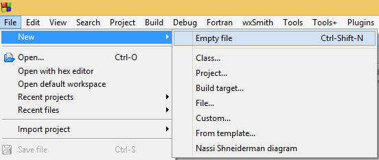
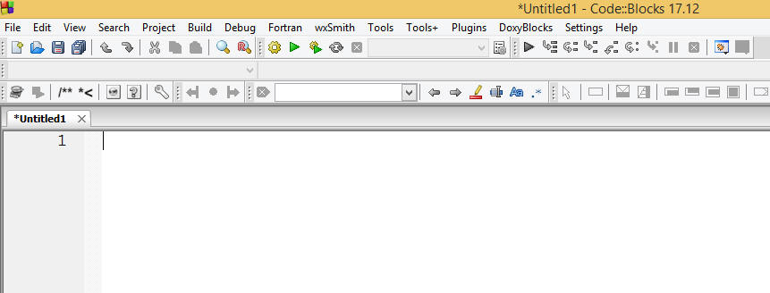
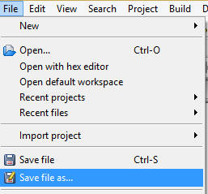
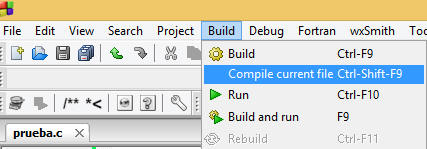

Cargando
Code::Blocks
El primer paso que debemos realizar es abrir el ambiente
de desarrollo (IDE) de Code::Blocks. La ruta es: Inicio ->
CodeBlocks. Una vez que se tiene abierto
el ambiente de desarrollo, el profesor dará una síntesis del
IDE de Code::Blocks.
Realizando
mi primer programa
Para comprender mejor las opciones que vamos a estar utilizando
en el curso, vamos a realizar un programa, el cual lo tienen que teclear,
compilar y correr.
- Selecciona del menú
"File", la opción de "New" > "Empty file"

- El editor
aparecerá en la pantalla.

Guardando
el programa fuente en C
Después de introducir el programa
entero dentro de la ventana de edición, el programa debe ser guardado:
- Selecciona el menú "File".
- Elige la opción "Save file as".

- Selecciona la unidad de disco donde lo guardarás (normalmente
será "D:") o la carpeta de "Mis Documentos".
- Guarda el archivo, por ejemplo prueba.c
Compilar
y ejecutar
Todos los archivos fuentes deben ser compilados
y entonces ligados con librerías para producir un programa ejecutable.
El comando "Compile current file" en Code::Blocks provee este
servicio:
- Selecciona el menú "Build".
- Elige la opción de "Compile current file".

- Si compiló
correctamente tu programa no aparecerá, en la parte inferior de
la ventana, ninún error o warning, de lo contrario, podrás
visualizar en esta sección una pequeña descripción
de tus posibles errores o warnings.
. |